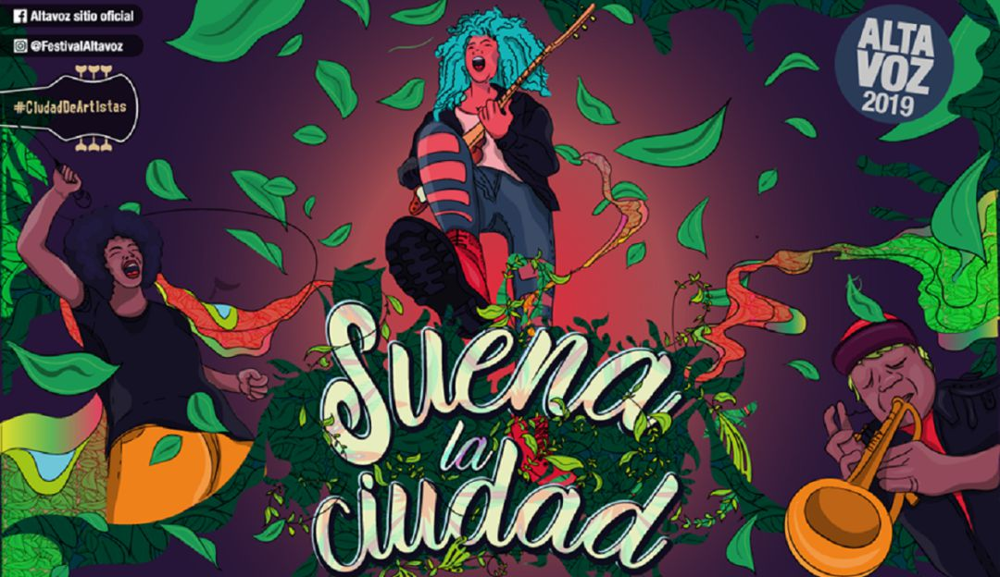
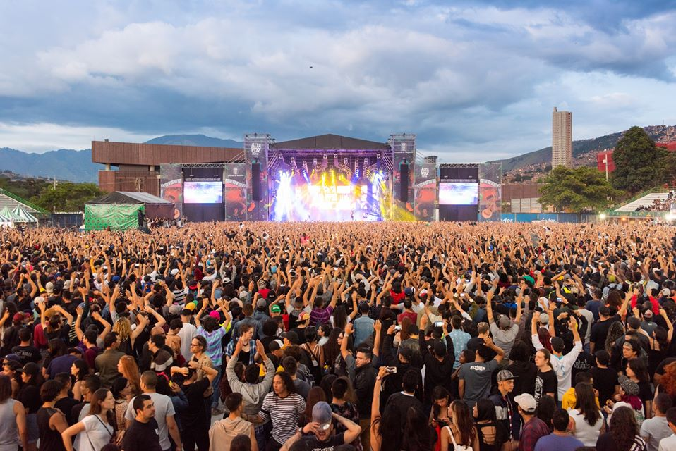
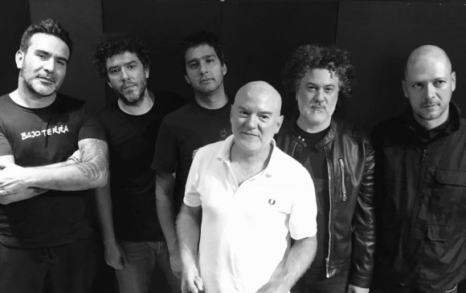

Han sido 15 ediciones de un Festival que suena a convivencia, a música, a amigos, a diversidad y a nuevos ritmos. Nos queda un sinnúmero de postales que nos recuerdan la evolución, los momentos inolvidables y el valor de Altavoz Fest para la ciudadanía. Es por ello que fueron recopiladas algunas imágenes para la memoria, que hoy compartimos. Estas fotografías son de Altavoz Fest, de los años 2009 y 2010, sexta y séptima edición del Festival.
El festival nació de la idea de crear un espacio para los jóvenes y los músicos de la ciudad expusieran su música, ya que en ocasiones anteriores se hicieron festivales de música que no duraron mucho tiempo; como lo fue el Festival
BANDA INVITADA-BAJO TIERRA
El grupo fue fundado por Jaime Andrés Pulgarín, Lucas Guingue y Nicolás Naranjo en 1989, proponiendo un sonido influido por el punk y el new wave, tendencias determinantes en la formación del movimiento roquero de Medellín en los años
el grupo firmó un contrato con el sello Codiscos y grabó una larga duración del cual se escuchó en todo el país el tema "Ojos enfermos" y en algunas ciudades "Piedras de cielo" y "Champeta". Dos años después grabaron Lavandería Real